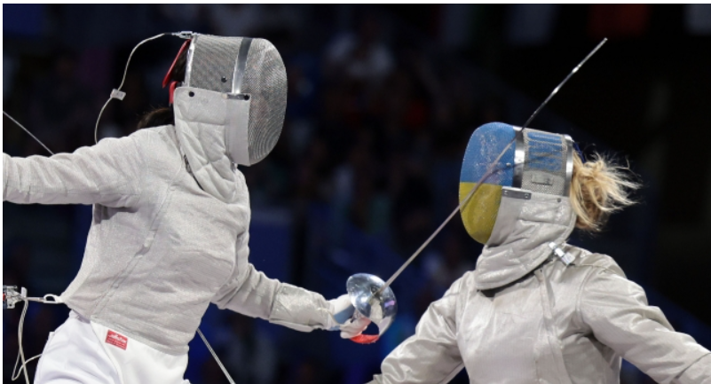
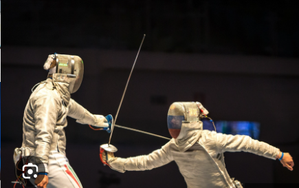

Development of Rules
Over time, the rules for sabre fencing evolved to distinguish it from the other fencing disciplines. Key differences include:
Target area: In sabre, the target area is the upper body, above the waist, including the arms and head. This reflects its origins as a cavalry weapon, where riders would attack their opponents' upper bodies.
Priority (right-of-way): Like foil fencing, sabre employs the concept of right-of-way, meaning that the fencer who initiates an attack first is awarded the point if both fencers land hits simultaneously. This encourages aggressive, fast-paced fencing. Scoring with the edge of the blade: Sabre fencing allows scoring with both the cutting edge and the point of the weapon, further emphasizing its slashing origins.
20th Century and Modern Era
The 20th century saw sabre fencing become increasingly specialized, with distinct tactics and training methods. Hungary continued to dominate the sport throughout much of the 20th century, producing numerous Olympic and World Championship winners. Italy also remained a major force in sabre fencing.
With the development of electric scoring systems in the mid-20th century, the accuracy and fairness of judging sabre fencing matches improved. Previously, matches had been judged by human referees based on their perception of the action, which could be subjective. The introduction of electronic scoring removed much of this subjectivity, although right-of-way decisions still require human judgment.
In the modern era, sabre fencing remains one of the fastest and most exciting fencing disciplines, characterized by its high-speed exchanges and aggressive attacking style. It is still part of the Olympic Games and continues to have strong representation from countries with long-standing sabre traditions, such as Hungary, Italy, Russia, and more recently, South Korea
Sabre Fencing in the 21st Century
In the 21st century, sabre fencing has seen further innovations in terms of training methods, equipment, and international competition. South Korea has emerged as a new powerhouse in the sport, challenging the traditional dominance of European nations. Modern sabre fencing emphasizes explosive speed, precision, and tactical awareness, with fencers often engaging in split-second exchanges.
The sport continues to evolve, with changes to the rules and technology enhancing both the safety and spectacle of sabre fencing for athletes and audiences alike.